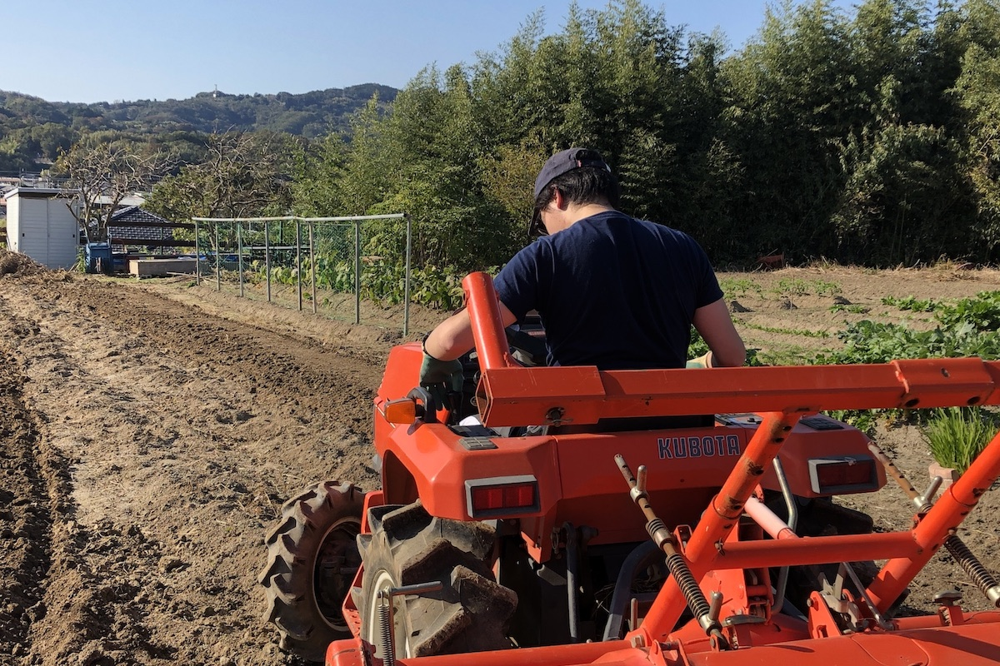
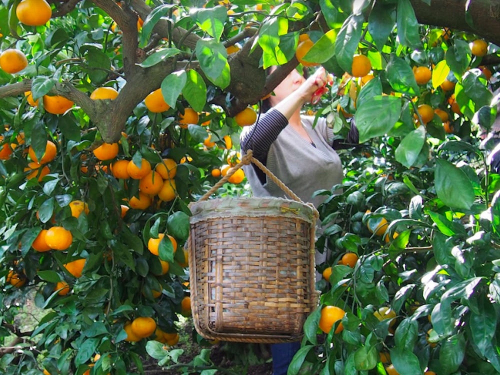
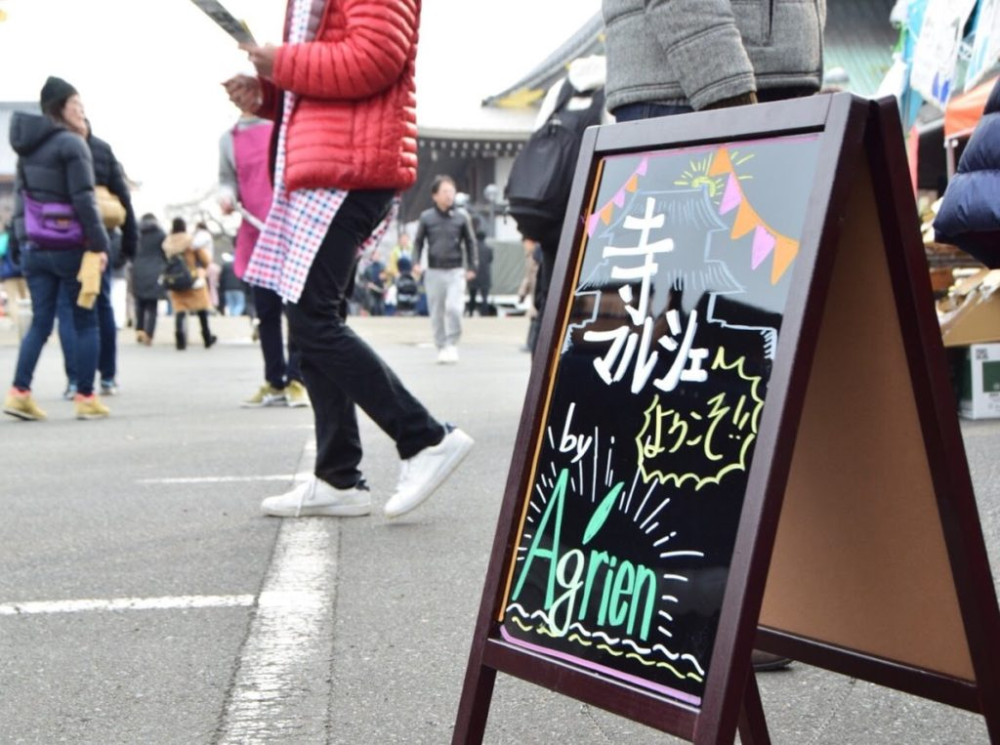
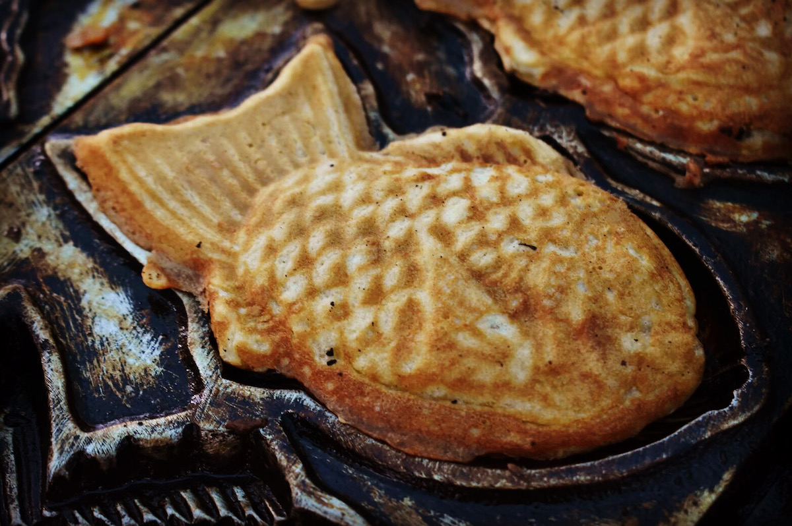
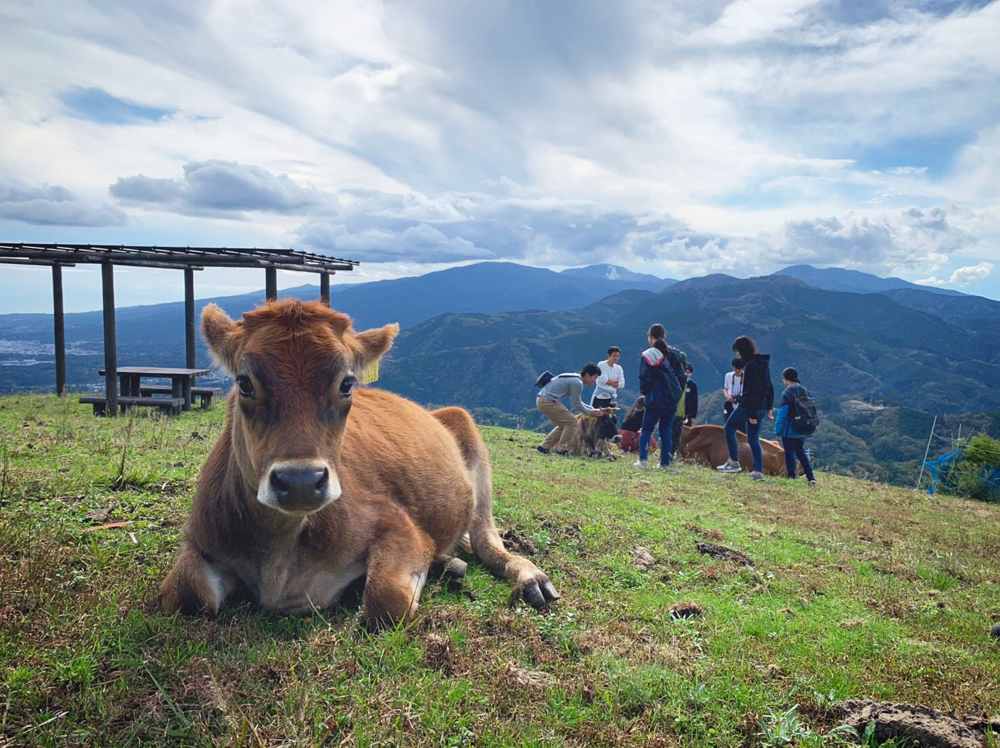
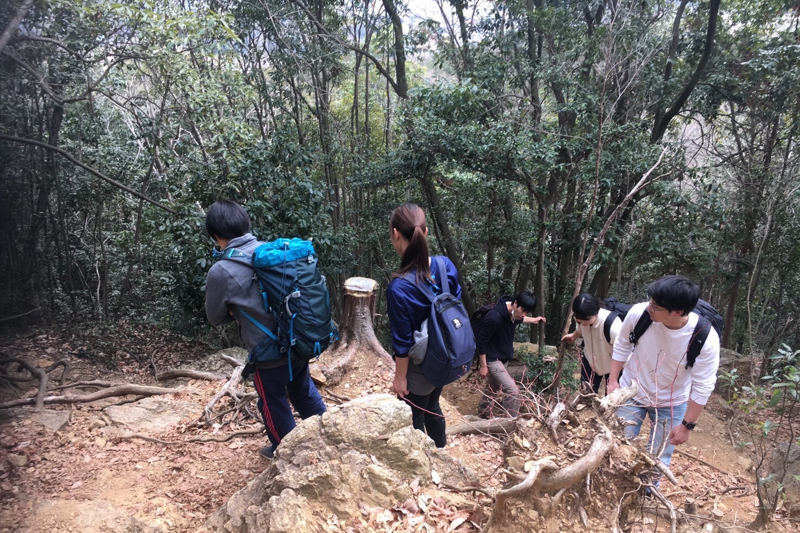

Activities
生産と消費の両方に関わる活動をしています。
農園管理
ご縁のあった神奈川県小田原で畑をお借りし、周年で農産物を育てています。放棄耕作地だった土地を開墾することからスタートし、早くも６年目に突入します。晩秋から春は玉ねぎ、初夏から秋はさつまいもなどを主に栽培しています。
援農
農園の管理を協力していただいている秋澤さんのあきさわ園で、農作業のお手伝いをしています。年間を通して様々な作業を行い、農家さんのお仕事を体験しています。
家庭菜園

弥生キャンパス内の畑では，果菜類や葉菜類，根菜類など多種多様な野菜を育てています。収穫した野菜は各メンバーが持ち帰ります。
学園祭

年２回開催される東京大学の学園祭「五月祭・駒場祭」に参加しています。自分たちで育てた野菜を使った料理や加工品、お世話になっている農家さんの野菜や加工品などを販売しています。
マルシェ
生産者のこだわりや想いを伝えるべく、不定期でマルシェを出店しています。「お陰さまの精神」の場でもある「お寺」でマルシェを行う新しい取り組みもです。
食品加工
収穫物の加工にも取り組んでいます。2022年度は収穫した玉ねぎを使って、ステーキソースやドレッシングの加工販売を行う予定です。
合宿
年1回合宿を行なっています（2020年以降は未実施）。合宿では農作業はもちろんのこと、農家さんへの訪問なども行なっています。メンバー間の親睦も深まる楽しいイベントです。
その他
有志での活動も行なっています。農大の学園祭にいったり，他大のマルシェにお邪魔したり，登山をしたり...と学年の枠を超えて交流しています。